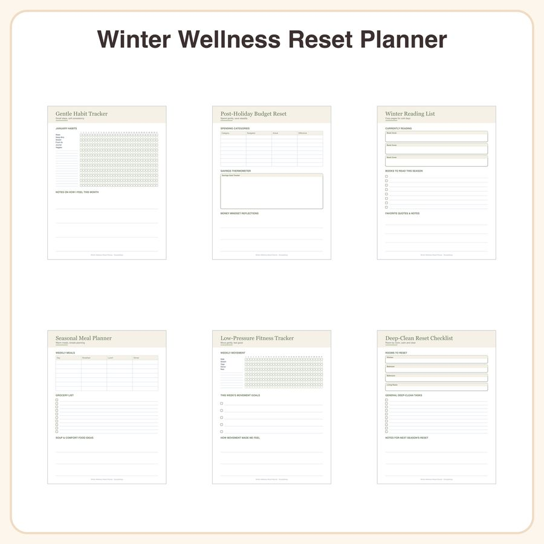

$4.99
View on EtsyHook: Skip the harsh resolutions — this soft, sage-and-cream reset system helps burned-out holiday hosts ease back into healthy routines at their own pace. What's Included (6 pages): • Monthly gentle habit tracker with soft checkbox grid • Post-holiday budget reset page with spending categories and a savings thermometer graphic • Winter reading list tracker with book cover boxes • Simple seasonal meal planner grid • Low-pressure fitness tracker with a weekly movement checklist • Deep-clean reset checklist organized by room Style: Clean, minimalist layout in a soft sage and cream palette with modern serif headers and simple checkbox grids — designed for easy, ink-friendly printing. This is a text/table-based design; it does not include illustrated doodles or decorative artwork. File Formats & Sizes: • High-resolution PDF, sized for both US Letter (8.5x11") and A4 • Instant digital download — no physical item will be shipped How to Use: Print at home or a copy shop, or use digitally with GoodNotes, Notability, or any PDF annotation app on tablet/iPad. License: For personal use and small-business commercial use up to 500 units. Please do not resell, redistribute, or share the files themselves. Honest Disclosure: This design was created by our shop with the help of AI tools as part of our creative process.